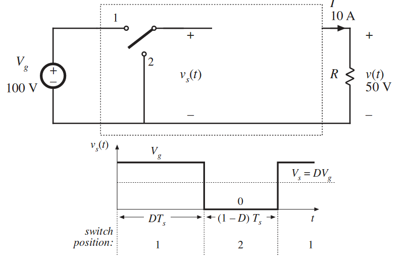
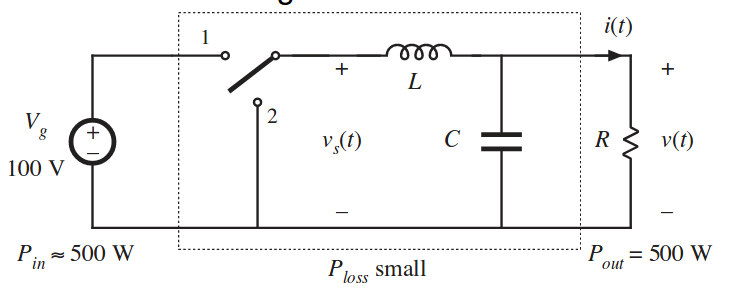
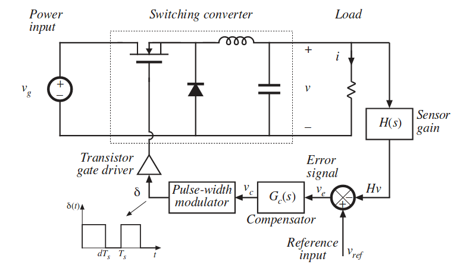
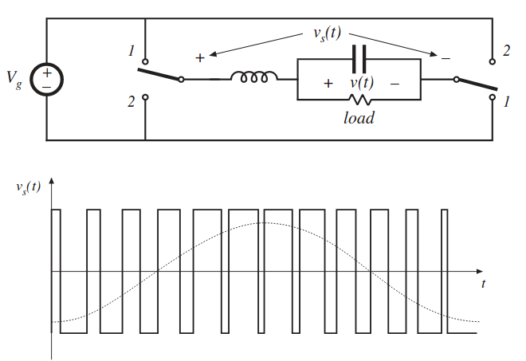
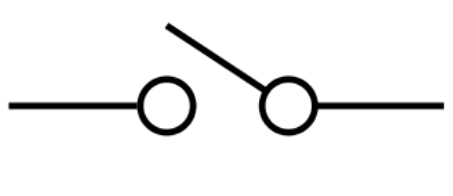
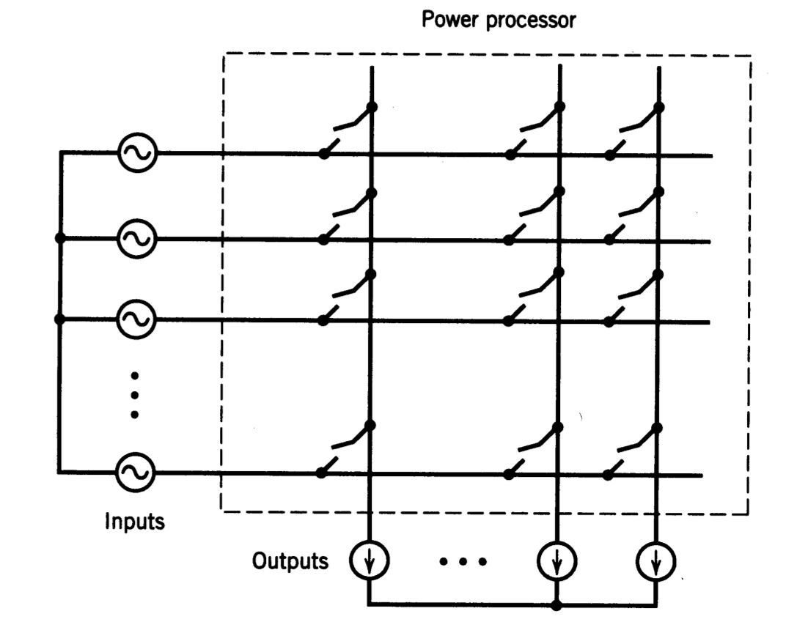

class: center, middle # EE-463 STATIC POWER CONVERSION-I # Basic Concepts ## Ozan Keysan ## [keysan.me](http://keysan.me) ### Office: C-113 <span class="meta">•</span> Tel: 210 7586 --- ## Let's start with a simple DC-DC Converter -- <img src="./images/ee463/simple_dc_dc.png" alt="Drawing" style="width: 800px;"/> ## Can you design this converter? --- ## Resistive Voltage Divider <img src="./images/ee463/resistive_voltage_divider.png" alt="Drawing" style="width: 800px;"/> --- # Series Regulator (Transistor in linear mode) <img src="./images/ee463/linear_regulator.png" alt="Drawing" style="width: 800px;"/> ### Efficiency= 50% ! --- # Use an Ideal (Two Position) Switch  --- ## With L-C (Low-Pass) Filter  ## Notice the low power loss --- ## A more realistic example (Buck converter)  --- # Generating AC: Single-Phase Inverter  --- # Common Points -- ## Avoid lossy elements! <img src="./images/ee463/lossy_elements.png" alt="Drawing" style="width: 800px;"/> --- # Ideal Switch  -- # Which factors make a switch ideal? --- # Ideal Switch -- ## No voltage drop in the on-state ## Zero switching time ## No leakage current in the off-state ## Infinite breakdown voltage and current capacity --- # What happens if you turn off a inductive load? -- # or # What happens if turn-on with a capacitive load? --- # Practical Switch -- ## Conduction losses (voltage drop, leakage current) ## Finite swicthing time ## Switching losses ## Limited current and voltage capacity ## Limited dv/dt and di/dt rating --- # Generalized Matrix Converter --  -- ## Remember there are no ideal sources as well... --- # General Rules in Power Electronics -- ## Do not short circuit voltage sources (Unless V=0) -- ## Do not open (turn-off) current sources (Unless I=0) -- ## Inductors behave like current sources -- ## Capacitors behave like voltage sources --- # Inductors in Steady-State Operation -- ## a.k.a. Inductor Volts-Seconds Balance ### Average value of inductor voltage is zero in steady-state ### (Positive and negative areas of inductor voltage cancel each other) <img src="./images/ee463/inductor_volt_seconds.jpeg" alt="Drawing" style="width: 400px;"/> --- # Capacitors in Steady-State Operation ## a.k.a. Capacitor Charge (or Ampere-seconds) Balance -- ### (Positive and negative areas of capacitor current cancel each other) --- # Performance Parameters for Waveforms -- ## i.e. How do you decide an output is better than another? -- ## For example, can you tell which one of the DC supply voltage is better? - ### [5 + 0.5sin(x)](https://www.google.com.tr/search?client=ubuntu&hs=a00&channel=fs&dcr=0&q=plot+%285+%2B+0.5*sin%28x%29%29&oq=plot+%285+%2B+0.5*sin%28x%29%29&gs_l=psy-ab.3...8005.8005.0.8351.1.1.0.0.0.0.111.111.0j1.1.0....0...1.1.64.psy-ab..0.0.0....0.14FW91dDBMU) ### or - ### [5+0.2*sin(x)+0.2*sin(10*x)](https://www.google.com.tr/search?client=ubuntu&channel=fs&dcr=0&q=plot+%285+%2B+0.2*sin%28x%29%2B+0.2*sin%2810x%29%29&oq=plot+%285+%2B+0.2*sin%28x%29%2B+0.2*sin%2810x%29%29&gs_l=psy-ab.3...22746.22746.0.23464.1.1.0.0.0.0.380.380.3-1.1.0....0...1.1.64.psy-ab..0.0.0....0.DmF0L99uZyc) --- # Performance Parameters for Waveforms ## i.e. How do you decide an output is better than another? ## Or can you tell which "more sinusoidal"? - ### [sin(x) + 0.3sin(3x)](https://www.google.com.tr/search?client=ubuntu&channel=fs&dcr=0&q=plot+%28sin%28x%29%2B0.3sin%283x%29%29&oq=plot+%28sin%28x%29%2B0.3sin%283x%29%29&gs_l=psy-ab.3...399088.399088.0.399490.1.1.0.0.0.0.283.283.2-1.1.0....0...1.1.64.psy-ab..0.0.0....0.zn-Ff1RFWRY) ### or - ### [sin(x) - 0.3sin(3x)](https://www.google.com.tr/search?client=ubuntu&channel=fs&dcr=0&q=plot+%28sin%28x%29-0.3sin%283x%29%29&oq=plot+%28sin%28x%29-0.3sin%283x%29%29&gs_l=psy-ab.3...4386.5198.0.5884.3.3.0.0.0.0.420.683.2-1j0j1.2.0....0...1.1.64.psy-ab..1.0.0....0.DUWQhKX7g00) --- # RMS -- (Root Mean Square) -- ## \\(I_{RMS}= \sqrt{\dfrac{1}{T}\int_0^T i^2(t) dt}\\) -- ## What is the physical meaning? -- ## Average power dissipated if connected to 1 Ohm resistor --- # RMS (Root Mean Square) ## What is the RMS of a signal with harmonics? ## \\(I= I_1 + I_2 + I_3 ...\\) -- ## \\(I\_{RMS}= \sqrt{I\_{1\_{RMS}}^2+I\_{2\_{RMS}}^2+I\_{3\_{RMS}}^2...}\\) <!--- # Form Factor (FF) ## Ratio of RMS to average value ## \\(FF= \dfrac{V\_{RMS}}{V\_{average}}\\) ### Example: What is the form factor of a rectified sine? # Crest Factor (or Peak Factor) ## Ratio of peak value to RMS Value ## \\(CF= \dfrac{V\_{peak}}{V\_{RMS}}\\) # Crest Factor ## Higher CF means, higher energy in higher frequency harmonics <img src="http://www.mastec.co.nz/JST/PK%20Drawings/Image46.gif" alt="Drawing" style="width: 350px;"/> # Some Examples <img src="https://upload.wikimedia.org/wikipedia/en/2/2f/Crest_factor_table.JPG" alt="Drawing" style="width: 800px;"/> --> --- # Distortion Factor -- ## Ratio of Fundamental RMS to Total RMS -- ## \\(DF=\dfrac{I\_{1\_{RMS}}}{I\_{s\_{RMS}}}\\) ## Example: What is the DF for a square wave? --- # Displacement Power Factor -- ## Power factor for the fundamental component ## i.e. DPF=\\(cos(\phi)\\) , where \\(\phi\\) is the phase difference between the FUNDAMENTAL components of V and I. <img src="http://www.ecmweb.com/sites/ecmweb.com/files/styles/article_featured_standard/public/Power-Factor-Displacement-Power-Factor-0.jpg?itok=EHQrsyDZ" alt="Drawing" style="width: 400px;"/> --- # (True) Power Factor -- ## Ratio of Real Power (P) to Apparent Power (S) # \\(PF = \dfrac{P}{S}\\) ## True Power Factor includes all harmonics, whereas DPF includes only fundamental component. --- # (True) Power Factor # For sine wave -- # DF=1 and DPF=PF -- # For distorted waves -- # DF<1 and PF<DPF --- # THD -- (Total Harmonic Distortion) -- ## Ratio of the RMS of the harmonics (excluding the fundamental) to RMS of the fundamental component -- ## \\( THD= \dfrac{\sqrt{\sum\limits_{h=2}^{\infty}I_h^2}}{I_1}\\) -- ## i.e. ratio of power in harmonics to power in fundamental --- # THD (Total Harmonic Distortion) ## Very important for power quality, and limited by many standards. -- ### [Used to be less than 5% for LV](https://www.aadc.ae/img/41f76c6a-90c5-46e4-aabc-1414e6e4896b.pdf) -- ### In 2014, it was [increased to 8%](https://www.schneider-electric.com.tw/documents/Event/2016_electrical_engineering_seminar/IEEE_STD_519_1992vs2014.pdf) (pg 27). Why? --- # THD (Total Harmonic Distortion) ### \\( THD= \dfrac{\sqrt{\sum\limits_{h=2}^{\infty}I_h^2}}{I_1}\\) -- \\( = \dfrac{\sqrt{I_s^2-I_1^2}}{I_1}\\) -- ### Distortion factor can be expressed in terms of THD ## \\(DF=\dfrac{1}{\sqrt{1+THD^2}}\\) --- #Quiz --- ## You can download this presentation from: [keysan.me/ee463](http://keysan.me/ee463)